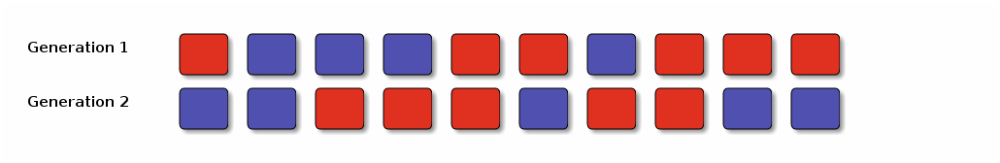

Genetic drift
A simple model of evolution
Evolution is the result of changes in the genetic composition of populations over time. One of the simplest models of evolution is as follows. There is a population of N individuals, among which there are two genetic types: red and blue1. Here is the initial generation of the population (N=10).

There is no mutation, no selection and no sex; the next generation is made up by randomly choosing 10 individuals from the previous generation2. A single individual can be chosen more than once, or not at all; the number of times an individual is chosen corresponds to the number of progeny it has in the next generation. Even without mutation or natural selection the proportions of red and blue types will change, because different individuals will have different numbers of offspring, by chance.
So the first two generations might look like this.

This is a form of evolution called "genetic drift". It is inevitable, although if the population is very large it will have less effect.
Let Xt be the number of red individuals in generation t, and let pt be the proportion of red individuals. So X1 is 6 and p1 is 0.6. To choose the number of red individuals in generation 2 we make 10 choices, each time having probability 6/10 of getting a red individual. So X2 is a binomial random variable, with 10 trials and success probability 0.6. In general, the random process is described by the following transition probabilities.

We can simulate the evolution over many generations in R. This code simulates the change in frequency in a single population over 100 generations. We'll make the population larger (N=1000) but still start off with 60% red individuals.
function simpledrift(X1=600, N=1000, ngens=100):
p <- numeric(ngens) p[1] <- X1/N for(g in 2:ngens) p[g] <- rbinom(1, size=N, prob=p[g-1]) / N plot(p, type="l", ylim=c(0,1), xlab="Generation", ylab="Proportion red")

But how variable is this process? To answer this we need to repeat the simulation many times (i.e. simulate many identical but independent populations). We could do that as follows
drift.slow <- function(N, X1, ngens, nreps) { p <- matrix(NA, nrow=ngens, ncol=nreps) p[1,] <- X1/N for(rep in 1:nreps) { for(g in 2:ngens) p[g,rep] <- rbinom(1, size=N, prob=p[g-1,rep]) / N } p }
But this is not a good implementation. One should make use of "vectorisation", which makes the simulation much more efficient when there are many replicates3. Note the way that rbinom simulates all replicates at once, but still one generation at a time.
drift.faster <- function(N, X1, ngens, nreps) { p <- matrix(NA, nrow=ngens, ncol=nreps) p[1,] <- X1/N for(gen in 2:ngens) p[gen,] <- rbinom(n=nreps, size=N, prob=p[gen-1,]) / N p }
To run the simulation:
function drift(nreps=10, N=1000, X1=600, ngens=100):
p <- drift.faster(N, X1, ngens, nreps) matplot(p, type="l", ylim=c(0,1), lty=1)
 And let's quickly see how much of a speed difference the vectorisation
makes.
And let's quickly see how much of a speed difference the vectorisation
makes.
function compare-times(nreps=1000, N=1000, X1=600, ngens=100):
functions <- c(drift.slow=drift.slow, drift.faster=drift.faster) times <- sapply(functions, function(f) as.numeric(system.time(f(N, X1, ngens, nreps))[1])) print(times) cat(sprintf("\nFactor speed-up = %.1f\n", times[1] / times[2]))
drift.slow drift.faster
6.064 0.204
Factor speed-up = 29.7
Footnotes:
1 Every individual is chacterised by a single type; no sex, recombination, mutation, selection, etc.
2 All members of the previous generation die as the next generation is formed.
3 Note that we can't vectorise the entire simulation because drift is a Markov process.
1 FOOTNOTE DEFINITION NOT FOUND: fn:1
2 FOOTNOTE DEFINITION NOT FOUND: fn:2
3 FOOTNOTE DEFINITION NOT FOUND: fn:3
Date: 2010-02-10 00:12:27 EST
HTML generated by org-mode 6.34trans in emacs 23